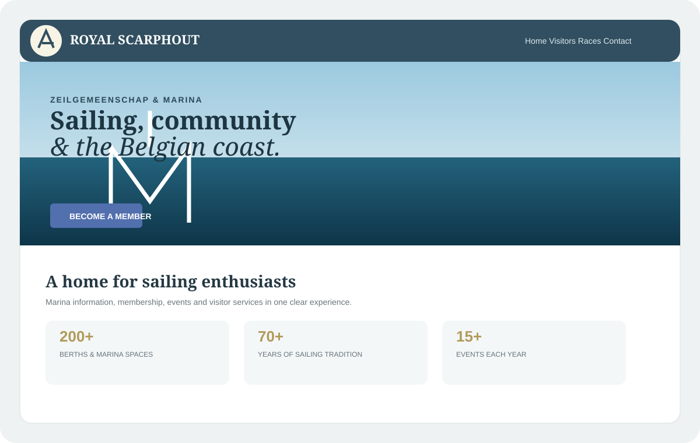
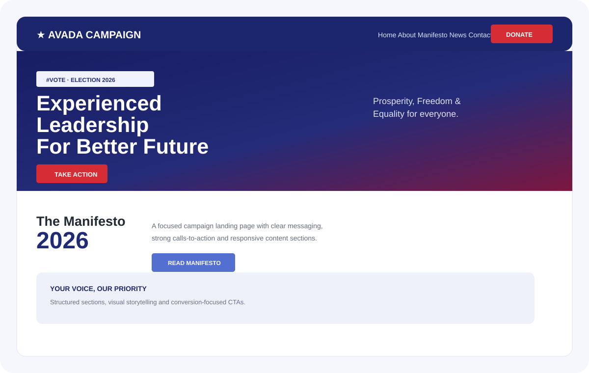

Project 01
DB Security
Professional security company website focused on trust, services, clear calls-to-action and a strong dark visual identity.
WordPressAvadaUI/UXResponsiveSEOI'm Asad Ali, a WordPress website designer specializing in Avada. I build modern, responsive websites with strong UI/UX, clear content structure and SEO-ready foundations.
I combine WordPress development with practical UI/UX, responsive design, content structure, SEO and performance thinking. My core specialty is building polished business websites with WordPress and Avada.
Everything needed to turn a business idea into a polished online presence.
Professional websites structured around your business, audience and goals.
Avada Builder pages, custom sections, headers, footers, menus and mega menus.
Clean hierarchy, typography, spacing and layouts that work across devices.
Semantic structure, metadata, content hierarchy and technical SEO foundations.
Clean product layouts and practical WordPress store experiences.
Modernize outdated websites with stronger design, usability and mobile experience.
These are the projects currently featured in the portfolio. Click any preview to open the live website.
Professional security company website focused on trust, services, clear calls-to-action and a strong dark visual identity.
WordPressAvadaUI/UXResponsiveSEO
Image-led yacht club website with clear visitor information, membership content, navigation and contact journeys.
WordPressAvadaResponsiveContent Structure
Campaign-focused landing page concept built around visual impact, messaging hierarchy, strong CTAs and responsive sections.
WordPressAvadaLanding PageCTA DesignCore skills covering development, design, optimization and marketing-ready foundations.
Understand the business, audience, content and goals.
Structure pages, navigation, content and user flow.
Create visual direction, hierarchy and responsive layouts.
Develop the website in WordPress and Avada.
Refine mobile UX, SEO foundations and performance.
Final quality check, polish and professional handover.
Tell me what you're building, what needs improving, or what you want your website to achieve.